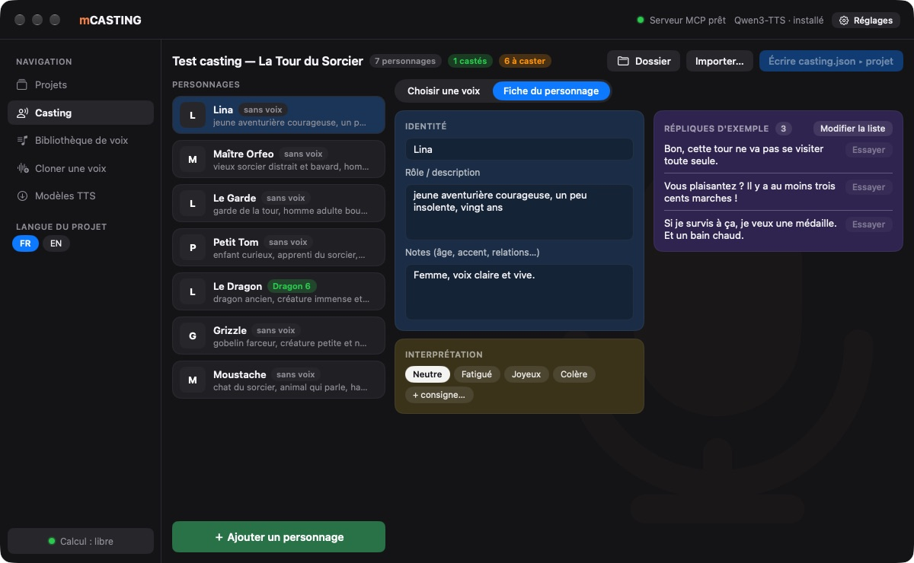
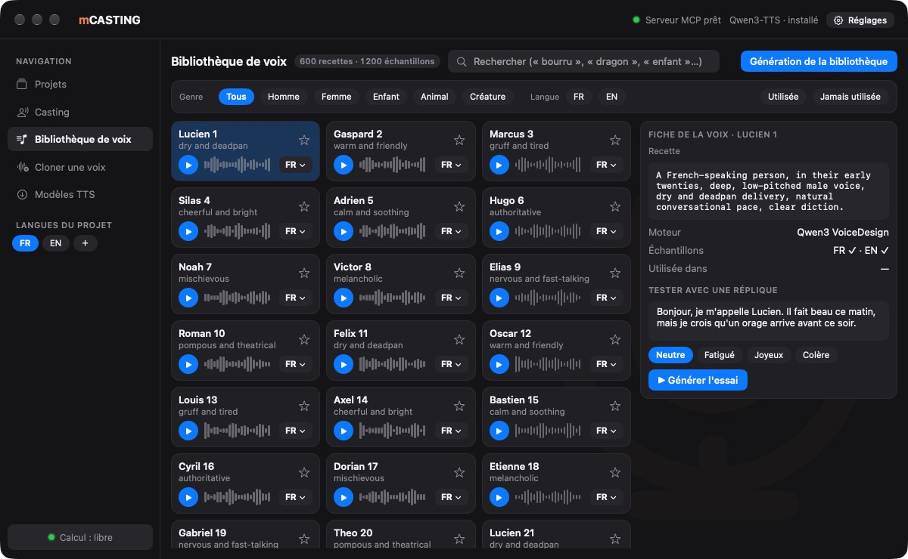
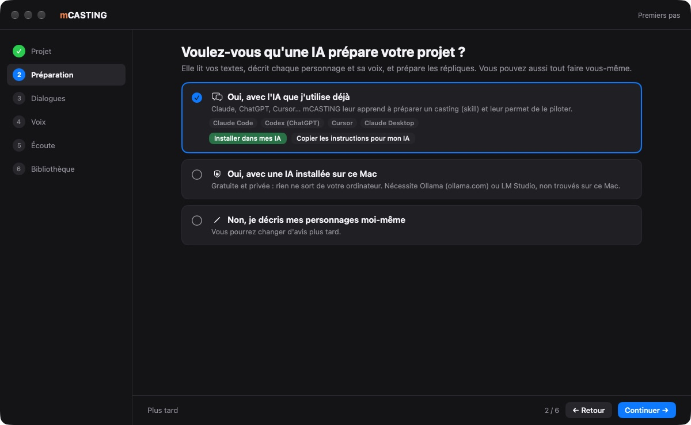
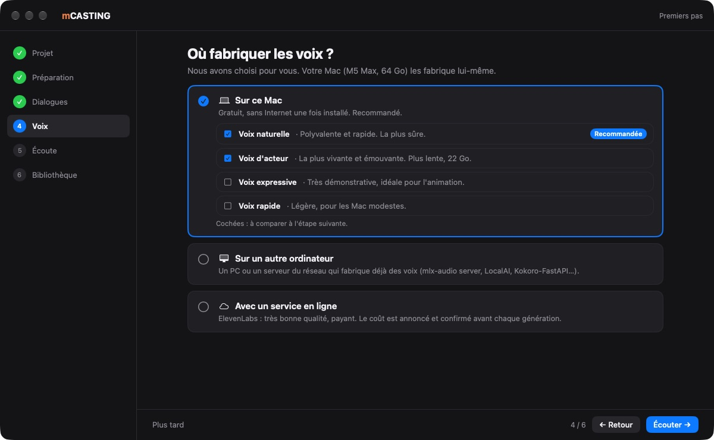
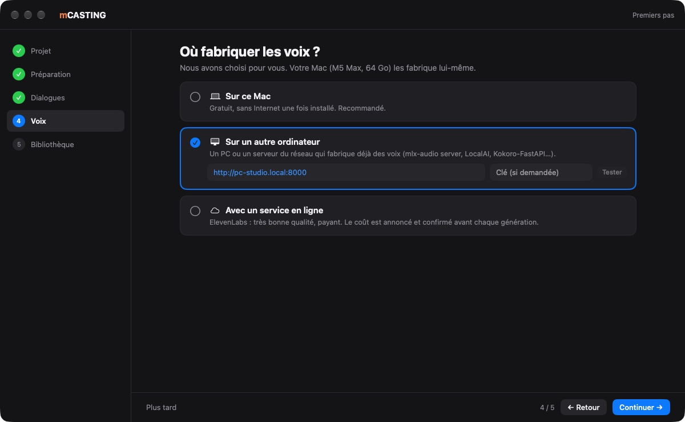

Flat Mat design, colours, typography, components, screens and behaviour of the app.
Version 2.0.0 · November 21, 2026 DESKTOP MAC TOOLKIT · Starbudweiser & Claude Code (Anthropic) MIT License · github.com/starbudweiser/mCASTING
Contents
1Flat Mat design principles
2Colours
3Typography and measurements
4Components
5Window structure
6Splash
7Projects
8Casting
9Character sheet
10Voice library
11Clone a voice, TTS models, Settings
12Getting started guide
13Behaviour, languages and accessibility
1Flat Mat design principles
mCASTING follows the DESKTOP MAC TOOLKIT's Flat Mat design: matte, flat surfaces with no drop shadow, gloss or gradient. Hierarchy comes from solid colour, 1-pixel rules and typography, not from effects.
Matte and flat
Solid cards, 1 px rule, radius 12 for cards and 8 for buttons and fields. No blur, no shadow.
Warm beige and deep dark
Light theme on a warm beige (#f4f1ec), dark theme on a near-black (#131316). Both follow the system setting.
The orange "m"
Wherever the app name is written in the interface (top bar, splash, About), its lowercase "m" takes the logo's orange. Never inside a drop-down menu.
The interface tells the truth
Real states on screen (MCP server ready, engine installed, job running), measured durations and sizes, costs stated before any spending.
One selection, one contrast
The chosen element is always the most contrasted of its group: filled chip, tinted card, accent outline.
Subtle watermark
The icon's microphone appears very large and barely visible behind the content area.
2Colours
Base colours
Each colour has one value for the light theme and one for the dark theme (Flat.dyn).
Background#f4f1ec · #131316
Card#ffffff · #232327
Control#ebe6de · #2c2c31
Rule#e3ddd2 · #303035
Text#26231e · #f5f5f7
Secondary text#7b756a · #98989f
Accent (selection)#26231e · #0a84ff
Brand ("m")#d9622b · #f08a52
Success#3f8f5a · #30d158
Warning#b7791f · #ff9f0a
Create (green)#3f8f5a · #2f7d52
Avatar#26231e · #2c2c31
Coloured panels of the Casting screen
The main panels of the Casting screen have their own background: a colour in the dark theme, a warm grey in the light theme.
Character, identity#ccc8c0 · #1d3350
Voice search#e3e0da · #3e2440
Current voice#e3e0da · #1c3f2d
Sample lines#e3e0da · #36285a
Delivery (sheet)#ccc8c0 · #423a1c
Tone-on-tone rule
On a coloured panel, elements do not keep the app's greys: they take the panel's tint, lightened or recessed. Only the selection is high-contrast.
Element
Light theme
Dark theme
Resting chip and counter
white 65%
white 9%
Chip text
#26231e
white 88%
Selection (active chip, Sample buttons)
#26231e, white text
white 94%, #15151a text
Input field
white 75%, black 6% rule
black 22%, white 6% rule
Description
#1d1b18 at 66%
white 68%
Section headers
#1d1b18 at 55%
white 55%
Separator, outline
black 8% · 6%
white 10% · 6%
Avatar
black 72%
black 28%
3Typography and measurements
System font (SF Pro), no embedded font. Sizes are fixed and identical from one screen to the next.
26 px circle, accent background, play or stop icon.
Avatar
Rounded square with the character's initial, bold white text.
Choice card (guide)
Radio button, title, help sentence; the chosen card gets an accent outline and reveals its options.
Accessibility rule: a button is never placed inside a card that is itself clickable. Secondary actions sit next to it or as an overlay, so every button stays reachable.
5Window structure
Top bar (transparent title bar): app name with its orange "m", MCP server state (green dot, "MCP server ready"), engine state ("Qwen3-TTS · installed"), "Settings" button.
Sidebar: Navigation (Projects, Casting, Voice library, Clone a voice, TTS models), Project languages (one or two, the listening language highlighted, ＋ to change them, progress of an incomplete language), and at the bottom the compute state ("Compute: idle", or the running job with a progress bar and percentage).
Content: page title, actions on the right, then the page itself over the microphone watermark.
Menu bar icon: orange microphone; active project, running job, open mCASTING, Getting started, About, Quit.
Main window, dark theme: top bar, sidebar and Casting screen (interface shown in French).
6Splash
A dark 476 × 166 px card in a frameless 500 × 190 px window, centred exactly on the screen. The icon spins in, the letters of the name flip in one by one, then the orange rule draws and the subtitle ("AI voice casting") appears; the version sits at the bottom right.
Time
Event
0 s
Splash visible; the animation starts on first display.
2 s
Main window opens (or as soon as it is ready).
3 s
Exit starts (zoom out and fade, 600 ms).
≈ 3.6 s
Splash closed. With "Reduce motion", a still splash with the same timing.
7Projects
Projects page, light theme (filtered list).
One card per project: name, languages, number of characters and of cast characters, progress bar, casting.json file and state ("empty", "in progress").
The active project is highlighted; a click opens it in Casting.
Trash icon at the top right of each card: confirmation, then the project leaves mCASTING without touching its folder.
Filter, "Import a project…" and "New project" (opens the guide); the last card reminds that an agent can create a project through MCP.
8Casting
Casting screen, light theme: panels in warm greys.
Characters column: avatar, name, chosen voice (or "no voice"), role; "Add a character". Right-click and multi-selection: random voices.
Tabs "Choose a voice" and "Character sheet".
Character panel (blue in dark): identity, current voice samples, delivery (emotion), Faithful or Expressive line mode.
Search panel (plum in dark): text search, gender, age, tone, language and favourites filters; filtered voice count.
Voice cards: name, gender and tone, badge of the project's languages (green when ready, orange "FR · DE…" when one is missing), star, waveform and play, "FR ▾" language menu (project languages, then other languages with the same timbre, free text, accent note), "Character line", "Compare", "Choose".
Language filter: the project's languages and "All".
9Character sheet

Character sheet, dark theme.
Two columns, nothing truncated: Identity (name, role and description, notes), the source project's Current voice with its samples, Sample lines (each with "Try", editable list) and the default Delivery. For a creature or an animal, voice effects and the cry are added.
10Voice library

Library, dark theme: voice grid and the selected voice's card.
MCP server: stdio transport, ready-to-copy command to declare the server in an agent, list of tools.
Agent call log: time and name of every tool called.
12Getting started guide
Full-content window: top bar with the app name and "Getting started", steps on the left (number, green check once done), content centred in a column of 860 px at most, bottom bar with "Later", the step counter, "Back" and the primary action.
1. Project: name, folder, voice languages (main and second).

2. Preparation: the AI you already use, a local AI, or manual description.3. Dialogue: drop a JSON, CSV or text file.

4. Voices on this Mac: models fit to the hardware, the recommended one marked.

4. Voices on another computer: address, optional key, "Test".
The following steps — Listening (the same lines spoken by every checked model), Creatures (suggested voices, effects, cries) and Library — use the same layout. Screens shown in French.
13Behaviour, languages and accessibility
Opening: the main window opens centred on the pointer's screen, at the last size chosen (the position is never restored).
Four languages: French (written first), English, Spanish, Italian; same interface, same keys, language picked from the system (English as fallback).
Themes: light and dark following the system; every colour is defined for both.
Motion: "Reduce motion" makes the splash still; animations only use opacity and transforms.
Accessibility: actions never nested inside a clickable card, explicit labels on every button, tooltips on truncated names.
Discretion: a silent launch mode (--silent) opens the app without bringing it to the front, for automated testing.